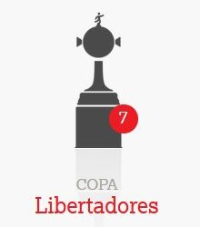
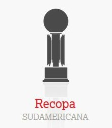

- 1938 PRIMERA DIVISIÓN
- 1939 PRIMERA DIVISIÓN
- 1948 PRIMERA DIVISIÓN
- 1960 PRIMERA DIVISIÓN
- 1963 PRIMERA DIVISIÓN
- 1967 TORNEO NACIONAL
- 1970-71 TORNEO METRO
- 1977-78 TORNEO NACIONAL
- 1983 TORNEO METRO
- 1988/1989 PRIMERA DIVISION
- 1994 TORNEO CLAUSURA
- 2002 Torneo APERTURA
Titulos de AFA
- INTERCONTINENTALES - 2
- LIBERTADORES - 7
- SUDAMERICANA - 2
- INTERAMERICANA - 3
- SUPERCOPA - 2
- RECOPA - 1
- SURUGABANK - 1
Titulos Internacionales